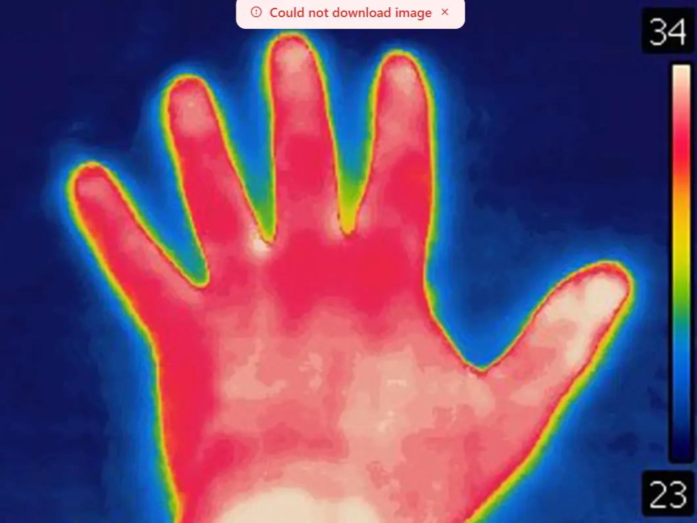
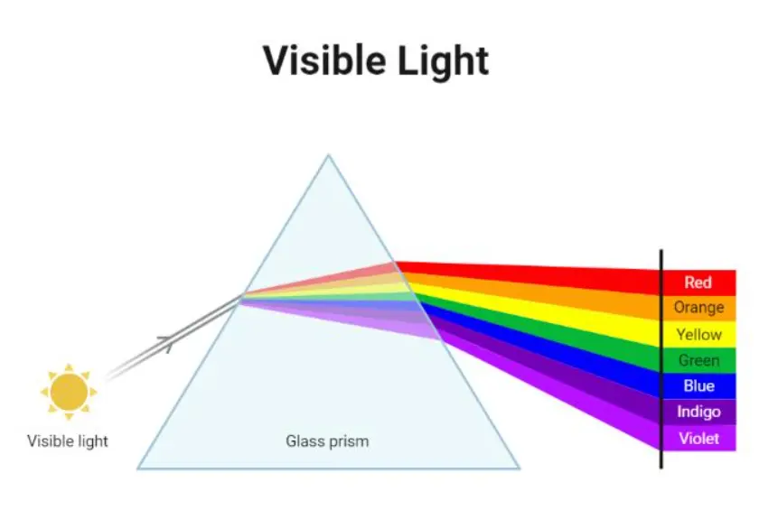
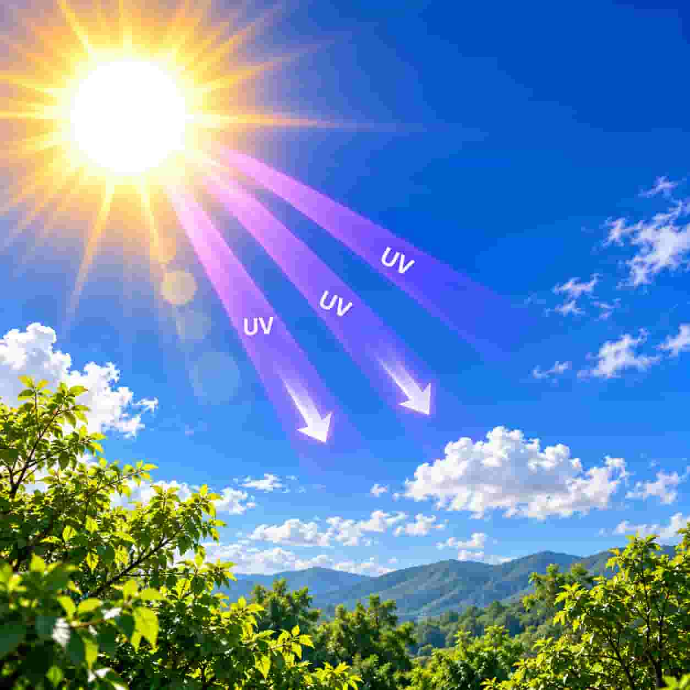
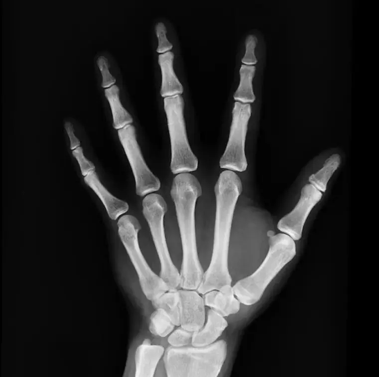

လျှပ်စစ်သံလိုက်လှိုင်း (Electromagnetic Waves)
လျှပ်စစ်စက်ကွင်းနှင့် သံလိုက်စက်ကွင်းတို့၏ ပြင်းအားများ စည်းမှန်တုန်ခါမှုကြောင့် ဖြစ်ပေါ်လာသော လှိုင်းများကို လျှပ်စစ်သံလိုက်လှိုင်းဟုခေါ်သည်။ လျှပ်စစ်သံလိုက်လှိုင်းသည် ကန့်လန့်လွှဲလှိုင်း အမျိုးအစားဖြစ်ပြီး ဗလာနယ်တွင်လည်း ဖြတ်သန်းသွားနိုင်သည်။ စွမ်းအင်များကို တစ်နေရာမှ တစ်နေရာသို့ သယ်ဆောင်ပေးနိုင်သည်။ ဥပမာ နေမှ ရရှိသည့် အပူစွမ်းအင်နှင့် အလင်းစွမ်းအင်တို့သည် ဗလာနယ်ကို လျှပ်စစ်သံလိုက်လှိုင်းအဖြစ်ဖြတ်ပြီး ကမ္ဘာပေါ်သို့ ပို့ဆောင်ပေးသည်။ ယင်းလှိုင်း၏ အမြန်နှုန်းမှာ 3 x 108 ms -1 ဖြစ်သည်။ (တစ်စက္ကန့်တွင်မိုင်ပေါင်း 186000 ဖြင့် ရွေ့လျားသည်) ။ မိုဘိုင်းဖုန်းများဖြင့် ဆက်သွယ်နိုင်ခြင်း၊ ရေဒီယိုနှင့် ရုပ်မြင်သံကြားထုတ်လွှင့်နိုင်ခြင်း၊ မိုက်ခရိုဝေ့မီးဖိုဖြင့် ချက်ပြုတ်နိုင်ခြင်းတို့မှာ လျှပ်စစ်သံလိုက်လှိုင်းကြောင့်ဖြစ်သည်။
လျှပ်စစ်သံလိုက်လှိုင်း (Electromagnetic Waves) သင်ခန်းစာတွင် ဖော်ပြထားသော လက်တွေ့လုပ်ဆောင်ချက်များနှင့် ဥပမာများနှင့် လေ့လာနိုင်ပါသည်။
Radio Waves — ရေဒီယိုလှိုင်းများ
ရေဒီယို၊ တီဗီထုတ်လွှင့်မှုနဲ့ ဆက်သွယ်ရေးအတွက် အသုံးပြုပါတယ်။
Microwaves — မိုက်ခရိုဝေ့လှိုင်းများ
မိုက်ခရိုဝေ့မီးဖိုနဲ့ ဆက်သွယ်ရေးနည်းပညာတွေမှာ အသုံးပြုပါတယ်။

Infrared — အနီအောက်ရောင်ခြည်
အပူဓာတ်နဲ့ ဆက်စပ်ပြီး အပူတိုင်းတာရေးနဲ့ အဝေးထိန်းခလုတ်တွေမှာ အသုံးပြုပါတယ်။

Visible Light — မြင်နိုင်သောအလင်း
လူ့မျက်စိနဲ့ မြင်နိုင်တဲ့ လျှပ်စစ်သံလိုက်လှိုင်းအပိုင်း ဖြစ်ပါတယ်။

Ultraviolet — ခရမ်းလွန်ရောင်ခြည်
ပိုးသတ်ခြင်းနဲ့ ပစ္စည်းအချို့ရဲ့ Fluorescence ကို ဖော်ထုတ်ခြင်းတို့မှာ အသုံးပြုနိုင်ပါတယ်။ အလွန်အကျွံ ထိတွေ့ရင် အရေပြားနဲ့ မျက်စိကို ထိခိုက်စေနိုင်ပါတယ်။

X-rays — အိတ်စ်ရောင်ခြည်
ဆေးဘက်ဆိုင်ရာမှာ အရိုးနဲ့ ခန္ဓာကိုယ်အတွင်းပိုင်းကို ပုံရိပ်ဖော်ဖို့ အသုံးပြုပါတယ်။
Gamma Rays — ဂမ်မာရောင်ခြည်
ပိုးသတ်ခြင်းနဲ့ ပစ္စည်းအချို့ရဲ့ Fluorescence ကို ဖော်ထုတ်ခြင်းတို့မှာ အသုံးပြုနိုင်ပါတယ်။ အလွန်အကျွံ ထိတွေ့ရင် အရေပြားနဲ့ မျက်စိကို ထိခိုက်စေနိုင်ပါတယ်။
အဓိကအချက်
လျှပ်စစ်စက်ကွင်းနှင့် သံလိုက်စက်ကွင်းတို့၏ ပြင်းအားများ စည်းမှန်တုန်ခါမှုကြောင့် ဖြစ်ပေါ်လာသော လှိုင်းများကို လျှပ်စစ်သံလိုက်လှိုင်းဟုခေါ်သည်။